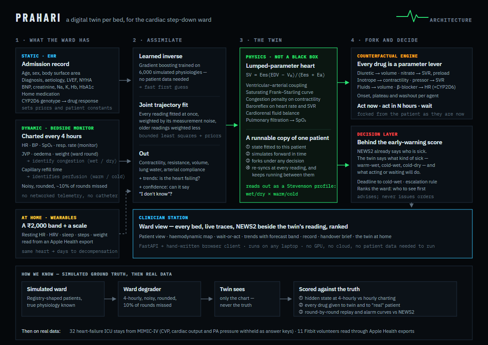
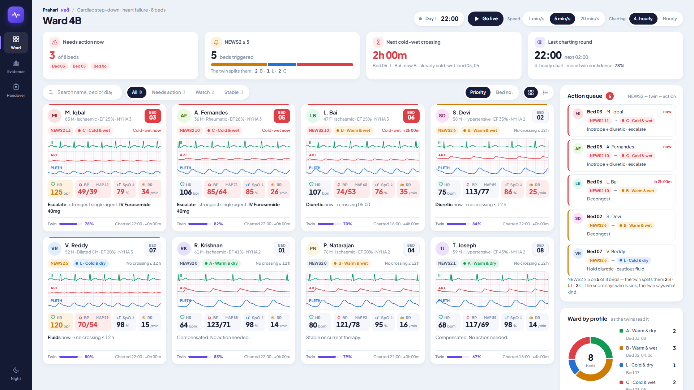
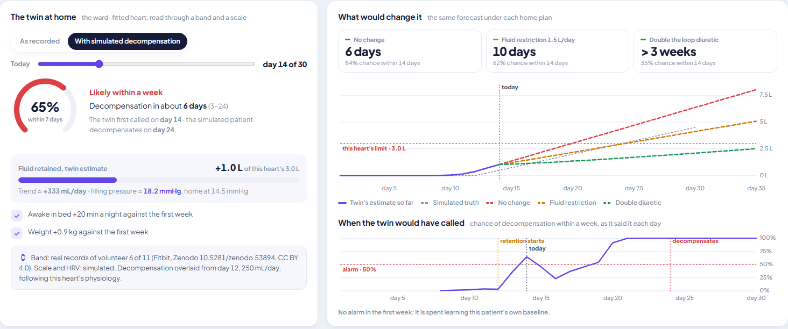

A digital twin per bed, for the cardiac step-down ward at night.
प्रहरी — the one who keeps watch
Heart-failure patients deteriorate over hours, not seconds — slowly enough to act on, quietly enough to miss between rounds.
Congested and underperfused.
Needs inotrope + diuretic, and escalation.
Underperfused, not congested.
The reflex diuretic makes her worse. Hold it; cautious fluid.
Both alarms fire. The right response is opposite. The ward has no instrument that tells them apart at 2 a.m.
State. Contractility, resistance, volume, lung water — fitted to this patient.
Forward. Simulates the next 12 hours as a trajectory, not a score.
Forks. Give the drug now, in four hours, or not at all — three futures.
Sync. Re-fits at every reading; keeps running between them.
The test of a twin: can you ask it about a future that never happened? A risk score can't.


Bed 6's 22:00 reading was missed. The twin kept simulating, dropped its confidence, and projected cold-wet at midnight. Act before you leave.
| Charting | Profile correct | Wet vs dry | Cold vs warm | Cardiac index error | Filling pressure error |
|---|---|---|---|---|---|
| Hourly | {{ICU_Q}} | {{ICU_WET}} | {{ICU_COLD}} | {{ICU_CI}} | {{ICU_PCWP}} |
| 4-hourly, by hand | {{W_Q}} | {{W_WET}} | {{W_COLD}} | {{W_CI}} | {{W_PCWP}} |
Same {{N_STATES}} patient-states in both rows. The fix that made it work was clinical, not mathematical: a BP cuff can't see filling pressure, so the twin reads the signs doctors already chart — JVP, oedema, weight for wet; capillary refill for cold.
| True profile | Furosemide helps | Furosemide harms | Twin names the profile |
|---|
Both systems replayed round by round on {{EVENTS}} deteriorations, thresholds swept. At matched alarm burden, NEWS2 catches as many or more.
With one or two readings, a downward trend isn't knowable yet — the twin misses some early slides.
So Prahari sits behind the score. NEWS2 says who. The twin says what kind, what to do, and what waiting costs.
| Twin vs withheld measurement | Stays | r |
|---|---|---|
| Central venous pressure | {{RM_CVP_STAYS}} | {{RM_CVP_R}} |
| Cardiac index | {{RM_CI_STAYS}} | {{RM_CI_R}} |
| Wedge vs PA diastolic | {{RM_PA_STAYS}} | {{RM_PA_R}} |
Moves with real measurements, but reads patients as less sick than they are — the unsafe direction. 4-hour vital-sign forecasts don't beat "no change" ({{RM_FC_TWIN}} vs {{RM_FC_PERS}} mmHg).
| Detector | Caught ahead | Days |
|---|---|---|
| "2 kg in 3 days" rule | {{H_W3}} | {{H_W3_LEAD}} |
| "2 kg over first week" | {{H_WD}} | {{H_WD_LEAD}} |
| Home twin, band + scale | {{H_TW}} | {{H_TW_LEAD}} |
| Home twin, band only | {{H_TB}} | {{H_TB_LEAD}} |
On real volunteers' records: {{H_RFA_S}} false alarms with a scale, {{H_RFA_B}} on the band alone — too many to use the band by itself.
Small samples, reported as they came out. The next step is the full MIMIC-IV database with a proper train/test split.

A week of band and scale data, read by the ward-fitted heart: resting heart rate, HRV, sleep, time awake in bed, steps, weight.
Each heart has its own limit — {{H_RANGE}} litres retained. Weak hearts go home fuller and tip over sooner.
Forecast at the first alarm off by {{H_MAE}} days; the true day inside its range {{H_COV}} of the time.
Wait or act, in days: fluid restriction or a doubled diuretic, run on the same heart.
No new hardware. Fitted from the 4-hourly chart and bedside signs — no telemetry, no catheter.
The twin goes home. A ₹2,000 band and a bathroom scale — no clinic visit — and it counts the days to decompensation.
Registry-shaped patients. Younger, sicker, rheumatic disease still present, heavy diabetes overlap.
Pharmacogenomics. CYP2D6 phenotype changes the simulated beta-blocker response.
Food is physiology. A rice-heavy dinner drives glucose and sympathetic load in diabetic heart failure; millet cuts both.
Runs on a laptop. No GPU, no cloud, no patient data needed to train.
Not clinically validated. The simulated results are an upper bound; on real ICU patients the twin is miscalibrated towards "less sick" and its drug effect sizes are uncalibrated.
Not a better alarm. It sits behind NEWS2. At home the band alone false-alarms too often; with a scale it matches the best weight rule.
Not an order-giver. It advises and explains; the doctor decides.
Next: the full, credentialed MIMIC-IV — recalibrate on a training split, test on the rest.
Then: silent shadow mode on a ward — the twin predicts, nobody acts on it, we compare.
Model: infusion titration and repeat dosing; right-heart physiology.
{{REPO}}